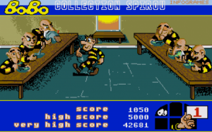

Retro: Piksler og kunst
Retrografikk, eller retroinspirert grafikk blir med jamne mellomrom brukt i ulike medier, det vere seg i blant anna musikkvideoar, animasjonar, spel og teikneseriar.
Mange har nok eit forhold til dette fenomenet frå gamle spel, teiknefilmar eller liknande som ein har gode minner til og som ein synes er stas å sjå igjen. Me snakkar altså i stor grad om nostalgi. Har derimot retroinspirert innhald nokre verdiar utover det? Likar folk som har vokse opp med 1080p og krystallklare flatskjermar på 50" dette? Basert på utbreiinga så er nok svaret ja for mange av oss.


Det må seiast at det ikkje nødvendigvis er lettvint arbeid som ligg bak. Det krev oppfinnsomheit og auge for detaljar å kunne få sagt eller vist mykje med så få detaljar. Her snakkar me ikkje (nødvendigvis) om høgoppløyseleg grafikk og voldsomme detaljar. Det er ikkje utan grunn at me her ofte snakkar om "pixel art".
Det finnes masse imponerande materiale som ein kan bli fascinert av, derfor har eg her samla ein del innhald som kan vere til inspirasjon eller underhaldning innanfor ulike kategoriar. Kanskje du lagar noko sjølv? Sleng gjerne nokre eksempel inn i kommentarfeltet.
Oversikt:
PIXELS av Patrick Jean frå OneMoreProduction viser ein invasjon av New York, der digitaliserte "8-bits-vesen" slår seg laus. Imponerande arbeid. Sjå YouTube-versjonen dersom du får problem med videoen over.
Mange musikkvideoar bruker også retrografikk, her eksemplifisert av Teddybears STHML med Rock-n-roll High School, Junior Senior sin låt Move Your Feet og Goldfish - Come Together. Goldfish har til og med laga ein video som forklarar korleis dei laga sin.
Fleire eksempel:
Det er vel få plassar det er meir naturleg å bruke retro-inspirert grafikk enn innan spel, så i denne kategorien bugnar det over med fantastiske eksempel. Sjølv om grafikken ofte er basert på enkel, stilisert grafikk - gjerne det du vil kalle pikselert - så står det ofte ikkje tilbake på gameplay (spelbarhet), musikk og andre kvalitetar.
Super Meat Boy er eit utfordrande spel. Til tider er det lett for at kontrolleren fyk i veggen. Men det er jo kanskje også nettopp eit teikn på retro-inspirasjonen og kor nært opp til "gamledagar" det er. Forvent i tillegg lekker grafikk - og gjennomført stil. Du får spelet på PC, Mac, Linux, Wii og Xbox. Sjå Super Meat Boy gameplay på YouTube.

Fez er eit spel som for øyeblikket berre finnes for XBox via digital distribusjon. Eit spennande puzzle-platform-spel, med herleg grafikk (og gameplay). Sjå også YouTube.

Superbrothers: Sword and Sorcery EP kom opprinneleg til iOS, men har i seinare tid også kome til PC, Linux og Mac. Det er ikkje utan grunn at mange set pris på denne opplevinga. Time Magazine plasserte mellom anna Superbrothers i sin kåring av "Top 10 of everything 2011". Sjå video på YouTube.

Emulere spel
Ellers kan det anbefalast å laste ned ein emulator etterfølgt av nokre av dei gamle spela du kanskje hugsar frå barndommen. Emulatorar finn du overalt på nettet, og desse kan køyre på dei aller fleste former for maskinvare og operativsystem. Merk at ikkje alle emulatorar er lovlege, ei heller sjølve spela - men du finn også lovlege versjonar, sånn at det er sagt. Ei side som tek for seg dei aller fleste plattformar innan konsollsegmentet med gode guidar og generelle tips er The Emulator Zone. Ellers er gode eksempel WinUAE for Amiga-maskiner, CCS og Vice for Commodore 64 og andre Commodore-maskiner, DosBox for DOS-baserte spel, ZSNES for Super Nintendo, osv.
Kjøpe konsoller og spel
Dersom du vil kjøpe faktiske konsollar er ulike auksjonssider eit godt utgangspunkt, i tillegg til spesialiserte sider som RetroGaming.no.
Ein anna framgangsmåte for å spele eldre spel er spesialiserte sider som Good Old Games (GOG) som for svært låge prisar gjer deg haugevis av eldre spel, gjerne saman med store mengder ekstramateriale og eit framifrå samfunn/community som kan hjelpe deg med gode tips og alle formar for problem. Du får og oppdateringar og forbetringar i nokre av spela. Det kan og nevnast at GOG.com som oftast bruker DosBox i spela dei legg ut, men at dei bygger dette inn i spelet slik at du slepp å styre med dette sjølv. Alt i alt er GOG ein fantastisk tjeneste som fortjener all mogleg form for støtte, dei har til og medbegynt å gje ut nyare spel - utan DRM.
Musikk og lyd som er retro-inspirert finn du ofte i dei allerede nevnte videoane og spela som er vist over, men dette er utan tvil ei eiga grein i retro-verda også. Noko av det mest populære er chiptunes, eller kva nokon vil kalle "blip-blop"-musikk. Kanskje har du høyrt denne før (om enn i ein litt annan versjon)?
Store artistar blandar gjerne inn denne formen/lyden/sounden i sin musikk, med Crystal Castles som eit eksempel eg sjølv likar godt.
Ellers finn du mange artistar og hobbymusikarar som gjer dette med stor stil. Ein kjent artist er (norske) Binäpilot. Sjekk også ut NRK Urørt for nokre gode eksempel.
Gå til Urørt for å finne ut mer om låta og artisten
Har du lyst å spele chiptunes live? Då har i så fall ein svenske funne opp/laga eit herleg instrument som han kallar The Chipophone. Han har til og med laga ein video som viser den i bruk - og han er flink å spele!
Her kan du få inspirasjon frå nokre av dei mest kjente låtane (themes) frå gamle spel, med eksempel som Tetris, Mega Man, Metroid, Castlevania, Duck Tales, Mario og Zelda.
Sjølvsagt finnes det også dei som lagar retroinspirert grafikk utan at det må vere ein del av spel, musikkvideoar eller animasjonar. Som sagt tidlegare er det ikkje berre-berre å lage tydeleg og god grafikk med forholdsvis få grunnelement (piksler), men nokon taklar dette fint og her kan du sjå nokre gode eksempel.
Paul Robertson er ein kjent artist som har laga mykje flott piksel-kunst.


R Grillotti har også mange godsaker, der mange av bileta består av svært få piksler og derfor krever ekstra mykje arbeid med tanke på plassering av desse firkantane.

Eit siste eksempel kan vere Sven Ruthner, som har mykje flott arbeid.

Sjå ellers 40 andre eksempel hos Noupe, og les ein kjempegod artikkel med mange fantastisk flotte eksempel i Smashing Magazine sin artikkel "Pixels Go Mad - The Celebration of Pixel Art". Har du lyst å prøve deg på å lage noko liknande? Sjå PSDTuts for ein samling med tutorials, eksempel og andre ressursar for piksel-kunst.